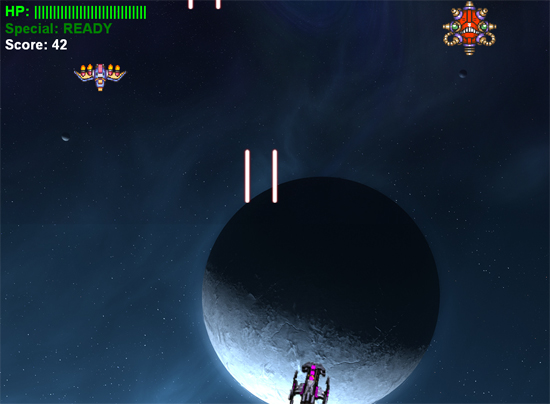

Breakout Z
Posted by Mathew on January 26th, 2008

Breakout Clone
Downloads:
Team:
Made as a solo project
Platform:
Made using Torque Game Builder v1.6
Notes:
This game was made as a first project in TC 445, Introduction to Game Design, and was my first Torque project. The objective of the assignment was to modify some basic breakout game, I modified mine by replacing the graphics, adding out of game menus, and providing custom music which I made using Mario Paint Composer.
Posted in Academic, Game
Colbert's Magical Punching WHAT!? Adventure
Posted by Mathew on January 20th, 2008

Crazy Boxing Adventure
Downloads:
Colbert's Magical Punching WHAT!? Adventure
Team Wombat:
- Design
- Everyone below
- Programming
- Art:
Platform:
Made using C# with the DirectX managed layer
Notes:
This was the product of a 48 hour Game Jam held at the University of Michigan, and while the total number of entries escape me (perhaps around 13?) our entry took fifth. The theme (if not already obvious) was simply Steven Colbert, and while this seemed odd at first it produced some surprisingly fun results. Some issues still plague the application itself, and I personally think our design was just too ambitious for 48 hours, but overall it was a fun experience. On a side note the first place team was also from Michigan State University.
Posted in Personal, Game
Shooting Stuff In Space
Posted by Mathew on November 30th, 2007

Vertical Shooting Action in Space
Downloads:
Team SSIS:
- Programming
Platform:
Made using C# and the DirectX managed layer
Notes:
This game was made for a final project in CSE 471, Media Processing, at Michigan State University. It was a fairly quick and fun project to work on, and even consists of a special DragonBall Z cameo should you reach a high enough score.
Posted in Academic, Game
CSS Zen Garden Design
Posted by Mathew on November 29th, 2007
Links:
Team:
Made as a solo project
Platform:
Made using XHTML 1.0 and CSS (2.1?)
Notes:
This was a project assigned for my web design course at MSU, TC 346. The assignment was to do a redesign of CSS Zen Garden using only css with their preexisting markup.
Posted in Academic, Web
Sicks of Fury: X-Mas Marks the Spot
Posted by Mathew on November 11th, 2007
Side Scrolling Shooting and Melee Action
Downloads:
Sicks of Fury: X-Mas Marks the Spot
Team Phalanx:
- Design
- Programming
- Art:
Platform:
Made using C# with XNA
Notes:
There appears to be some lingering issues with the installer that I'm still working out, but I believe it generally works best on PCs running Windows XP.
This was our second project working together (also see Blood and Bronze) and also was a game was made for a "Game Jam", which is a 48 hour contest we hold on a semi-regular basis at Michigan State University, and of the three total entries, ours won the most overall points, and received best in show.